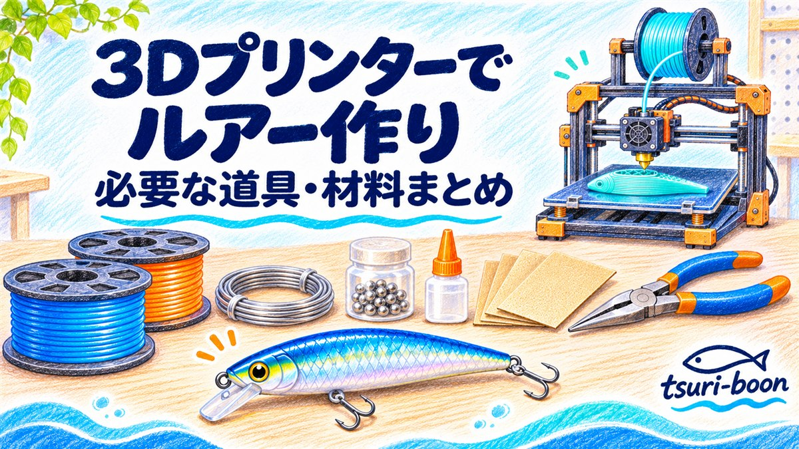

3Dプリンターでルアーを自作するのに必要なもの
「市販にない形やカラーのルアーを作りたい」「なくしても痛くないルアーを自分で作りたい」――そんな時に便利なのが3Dプリンターです。
この記事では、3Dプリンターでルアーを自作するのに最初にそろえる必要があるものを、設計ソフト・3Dプリンター・フィラメント・ワイヤー・ウエイトの5つに分けて紹介します。それぞれの違いと、選び方のポイントをまとめました。

3Dプリンターでルアーを作るのに必要なものは5つ
| 必要な |
何に |
選ぶポイント |
|---|---|---|
| ① 設計ソフト | ルアーの |
まずは |
| ② 3Dプリンター | 3Dデータから |
FDM |
| ③ フィラメント | ボディの |
水に |
| ④ ワイヤー | ラインアイ・ |
ルアーの |
| ⑤ ウエイト | 重さ・ |
比重 |
このほかに、フック・スプリットリング・塗料・トップコートがあれば、ルアーとして完成します。
① 設計ソフト：ルアーの形を作る
3Dプリンターで作るには、まずルアーの形を3Dデータ（STLなど）にする必要があります。最初は無料のソフトで、シンプルなミノーやペンシルの形から作るのがおすすめです。
| ソフト | 価格 | 難しさ | ルアー向きの |
|---|---|---|---|
| Tinkercad |
無料 | やさしい | ブラウザで |
| Fusion |
個人利用は |
ふつう | なめらかな |
| Blender |
無料 | むずかしい | 生き物のような |
設計しないで始める方法もある
ネット上には、ルアーの3Dデータを公開しているサイトもあります。最初はそれを印刷して、ワイヤーやウエイトの入れ方を練習するのも手です。ただし、データごとに使っていい範囲（ライセンス）が決まっているので、必ず確認しましょう。市販のルアーの形をそのままコピーして作るのはやめましょう。
※各ソフトの料金・利用条件は変わることがあります。最新の情報は公式サイトで確認してください。
② 3Dプリンター：FDMと光造形の違い
家庭用の3Dプリンターには、溶かした樹脂の糸を積み重ねるFDM（熱溶解積層）と、液体の樹脂（レジン）を光で固める光造形の2種類があります。ルアー作りを始めるなら、扱いやすいFDMがおすすめです。
| 項目 | FDM |
光造形 |
|---|---|---|
| 材料 | フィラメント |
液体の |
| 表面の |
積み重ねの |
とても |
| 中の |
インフィルで |
基本は |
| 後片づけ | 取り外すだけ | 洗浄・ |
| ルアー向き | ◎ 初心者・ |
○ 細かい造形・ |
選ぶときのポイント
- 造形サイズ：ルアーは10〜20cmくらいなので、家庭用ならほとんどの機種で作れます。
- 失敗しにくさ：自動で水平を合わせる機能（オートレベリング）があると、初心者でも失敗しにくいです。
- 置き場所・におい・音：FDMは動く音、光造形はレジンのにおいがあるので、置く場所を考えておきましょう。
おすすめの3Dプリンター
ルアー作りを始めるなら、設定がやさしく、買ってすぐきれいに印刷できるBambu Lab（バンブーラボ）がおすすめです。自動で水平を合わせたり、印刷の失敗を見つけたりする機能が付いていて、3Dプリンターが初めてでもルアーのボディを作りやすいメーカーです。
Bambu Lab A1 mini
- 方式
- FDM
- 造形サイズ
- 180×180×180mm
- おすすめの人
- 初めての1台に
コンパクトで置き場所に困らず、ルアーのボディを作るには十分なサイズ。まずPLAでルアー作りを試してみたい人に。
▼今すぐチェック

Bambu Lab A1
- 方式
- FDM
- 造形サイズ
- 256×256×256mm
- おすすめの人
- ルアーをまとめて作りたい人に
A1 miniより大きいサイズまで作れるモデル。ルアーを一度に何個も並べて印刷したい時や、タックルボックスの仕切りなど釣りの小物も作りたい人に。
▼今すぐチェック

Bambu Lab P2S
- 方式
- FDM（密閉型）
- 造形サイズ
- 256×256×256mm
- おすすめの人
- 実釣用のルアーまで本格的に作りたい人に
P1シリーズを作り直した、まわりを囲った密閉型のモデル。中の温度を保てるので、反りやすいABSやASAも印刷しやすくなります。熱や衝撃に強い材料で、実釣用のルアーを作りたい人に。AMS（複数の色のフィラメントを自動で切り替える装置）付きのComboもあります。
▼今すぐチェック

ELEGOO Saturn 4 Ultra 16K（光造形）
- 方式
- 光造形（レジン）
- 造形サイズ
- 211.68×118.37×220mm
- おすすめの人
- 細かい造形にこだわりたい人に
16Kの高解像度で、ウロコや目、リップの細かい形まで表面なめらかに作れる光造形の3Dプリンター。小さいルアーや、形にこだわった1本を作りたい人に。レジンの洗浄・二次硬化が必要なので、FDMに慣れてから2台目として選ぶのもおすすめです。
▼今すぐチェック

※造形サイズは各メーカーの公表値です。価格や仕様は変わることがあるので、購入前に最新の情報を確認してください。

③ フィラメントによる違い
同じ形でも、フィラメント（材料）で浮き方・強さ・水への強さが変わります。初心者はPLAで形を試して、実際に釣りで使うルアーはPETGで作るのがおすすめです。
| フィラメント | 比重の |
強さ・ |
扱いやすさ | ルアー向き |
|---|---|---|---|---|
| PLA | 約1.24 | 固いが |
とても |
○ 形の |
| PETG | 約1.27 | 粘りが |
扱いやすい | ◎ 実釣用に |
| ABS | 約1.04 | 熱や |
に |
○ 慣れてきたら |
| ASA | 約1.07 | ABSに |
ABSと |
○ 屋外での |
| TPU | 約1.2 | ゴムのように |
印刷に |
△ ソフトベイトの |
浮く・沈むはインフィル（中の密度）で調整できる
フィラメント自体は、ほとんどが水（比重1.0）より重い材料です。それでもルアーが浮くのは、FDMでは中を空洞にしたり、格子状にすき間を作ったりできるから。インフィル（中の密度）や壁の厚さを変えるだけで、同じ形のままフローティングにもシンキングにもできるのが、3Dプリンターでルアーを作る一番のメリットです。
光造形のレジンを使う場合
光造形のレジンは、細かい部分まできれいに作れる一方で、固まった後は割れやすいものもあります。ルアーに使うなら、靭性（粘り）を高めたタイプのレジンを選ぶと安心です。硬化前のレジンは肌にふれないように、手袋をして換気をしながら作業しましょう。
※比重は一般的な目安です。メーカーや製品によって違います。
▼今すぐチェック


④ ワイヤー：アイを作って強度を出す
ラインを結ぶアイと、フックを付けるアイは、ステンレスワイヤーで作るのが基本です。大きい魚が掛かった時にアイが抜けないよう、前のアイから後ろのアイまで1本のワイヤーでつなぐ「貫通ワイヤー」にすると安心です。
| ルアーの |
ワイヤーの |
|---|---|
| 〜7cmくらい |
0.6〜0.8mm |
| 8〜13cmくらい |
0.8〜1.0mm |
| 14cm以上 |
1.0〜1.2mm |
※太さはtsuri-boonの目安です。狙う魚の大きさや使うフックに合わせて調整してください。
▼今すぐチェック


貫通ワイヤーにするか、アイだけにするか
小さいルアーや、軽い魚を狙うなら、アイだけを差し込んで接着しても使えます。シーバス以上の魚を狙うなら、ボディを左右2つに分けて印刷し、間に貫通ワイヤーをはさんで貼り合わせる作り方がおすすめです。
あると便利な道具
- 丸ペンチ（ラウンドノーズプライヤー）：アイをきれいな丸に曲げる
- ワイヤーカッター：ステンレスワイヤーを切る（ふつうのニッパーだと刃が欠けやすい）
- ワイヤーベンダー：同じ形のアイをたくさん作りたい時に
▼今すぐチェック


⑤ ウエイト：重さと重心で泳ぎが決まる
ウエイトは、ルアーの重さ（飛距離）と、泳ぐ時の姿勢を決める大事なパーツです。素材によって、同じ大きさでも重さが大きく変わります。
| 素材 | 比重の |
価格 | 特徴 |
|---|---|---|---|
| 鉛 | 約11.3 | 安い | 加工しやすく、 |
| タングステン | 約19.3 | 高い | 小さくても |
| 鉄球 |
約7.9 | 安い | 軽めだが |
タングステンは小さくても重いので、ルアーの重心移動によく使われますが、近年は値上がりしています（タングステン高騰の記事で詳しく紹介）。市販ルアーでも、タックルハウスのフィードシャロー128Fが2026年にタングステンから鉄球に変わったように、鉄球を使う工夫も増えています。
固定重心と重心移動の違い
- 固定重心：ウエイトを接着して動かないようにする。泳ぎ出しが速く、姿勢が安定する。
- 重心移動：ボディの中に玉が転がる通り道を作る。投げる時は後ろに移って飛距離が出て、巻くと前に戻る。3Dプリンターなら、玉の通り道もデータで作れる。
ウエイトを入れる場所で泳ぎが変わる
お腹の低い位置に入れると姿勢が安定し、前寄りなら潜りやすく、後ろ寄りなら飛距離が出やすくなります。最初は同じボディでウエイトの位置だけを変えたものを何個か作って、お風呂やバケツで泳ぎを比べてみましょう。
▼今すぐチェック


あると便利なもの
| もの | 何に |
|---|---|
| フック・ |
ルアーの |
| サンドペーパー | 積層痕を |
| 塗料 |
カラーを |
| トップコート |
防水と |
| 接着剤 |
ボディの |
▼今すぐチェック（トップコート）


▼今すぐチェック（エポキシ系の接着剤）

最初にそろえるならこのセット
| 予算 | そろえる |
|---|---|
| お試しで |
Bambu Lab A1 mini＋PLA＋ワイヤー0.8mm＋鉛の |
| 実釣用まで |
Bambu Lab A1 または P2S＋PLA・ |
まずはPLAで形とウエイトの位置を試し、泳ぎが決まったらPETGで実釣用を作る、という流れがおすすめです。
よくある質問
Q. 3Dプリンターで作ったルアーは水に浮く？沈む？
A. どちらにもできます。材料自体は水より重いものが多いですが、FDMならインフィル（中の密度）を下げて中を空洞にすると浮き、密度を上げたりウエイトを足したりすると沈みます。
Q. 3Dプリンターで作ったルアーは水が染みない？
A. FDMは積み重ねた層のすき間から水が入ることがあります。トップコートを何度か重ねて、表面をしっかり防水しましょう。
Q. 光造形のレジンは危なくない？
A. 硬化前のレジンは肌や目に悪いので、手袋・保護メガネを付けて、換気をしながら作業します。洗浄に使ったアルコールや、硬化前のレジンの捨て方にも注意しましょう。
Q. 作ったルアーを売ってもいい？
A. 自分で設計したルアーなら問題ありません。市販のルアーの形をコピーしたものや、ライセンスで販売が禁止されている3Dデータを使ったものは売らないようにしましょう。
まとめ
3Dプリンターでルアーを自作するのに必要なのは、設計ソフト・3Dプリンター・フィラメント・ワイヤー・ウエイトの5つです。
最初は無料の設計ソフトとBambu Lab A1 miniのようなFDMの入門機、扱いやすいPLAから始めて、泳ぎが決まったらPETGやタングステンで実釣用に仕上げていきましょう。同じデータから何個でも、浮き方や重さを変えて作れるのが3Dプリンターの一番の楽しさです。自分で作ったルアーで釣れた1匹は、市販のルアーとはまた違ううれしさがあります。